Guide
The Traintimes repository contains code that creates a dashboard that retrieves the latest departures,
status and calling stations based on a specified station. The inspiration for this project came recently, as things
in the UK are opening up more and more from Covid-19, we find ourselves planning and going on more and more train journeys.
One of the pre-requisite steps for this is to go online (https://www.thetrainline.com/) to see the latest train times,
departures and other information. I was on my way to meeting some friends when I thought; wouldn't it be great
if I had a version of the live train information in my home that updates itself?
This project relies on the Live Departure Boards Web Service (LDBWS) API from National Rail
(https://lite.realtime.nationalrail.co.uk/OpenLDBWS/). This is a SOAP API which provides real time access to train
information, provided in an XML format. There is a pre-requisite that involves a registration process and gaining
an access token. Without this, one cannot make an API calls to retrieve information:
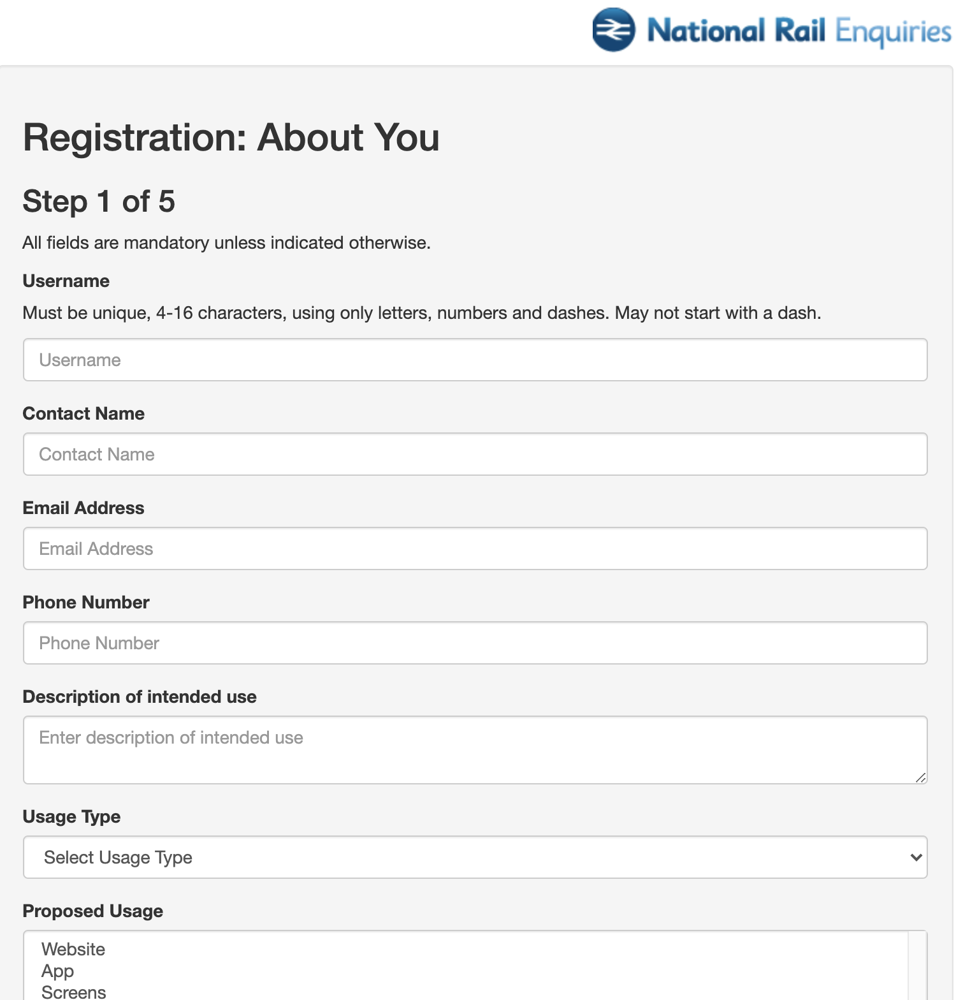
Note that we also make use of the Zeep library which provides a programmatic interface to a SOAP server. For more
information, please consult this documentation: https://docs.python-zeep.org/en/master/index.html
This a screenshot of what the end dashboard looks like:
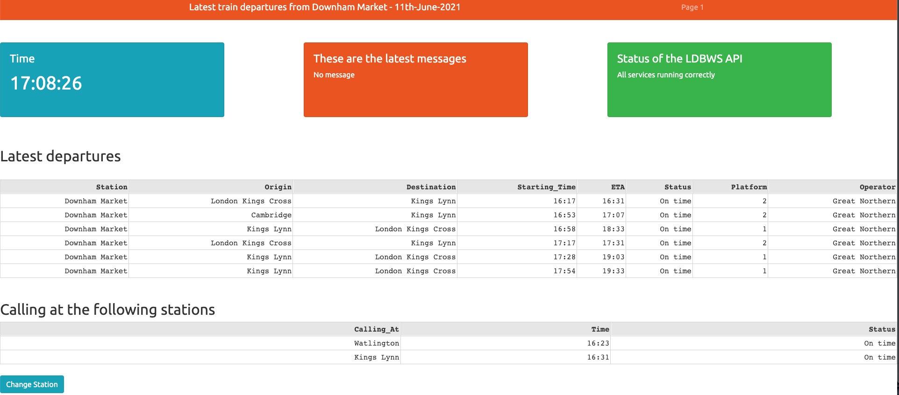
As seen from the above image, this is a very simple dashboard that relies on a few key elements.
Primary Messages
The first are the latest messages card which retrieves any messages returned by the API:
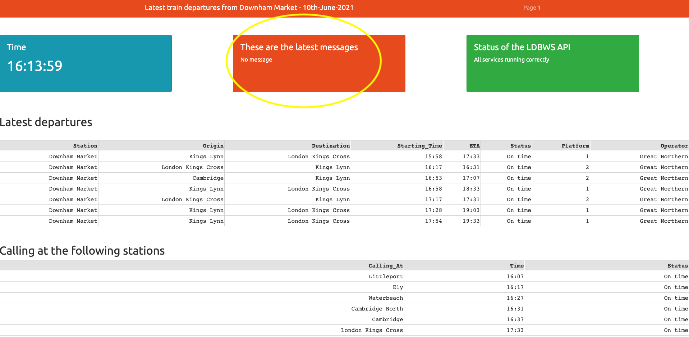
This is fairly trivial to retrieve as we can specify the soap headers and initiate a response:
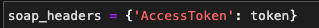
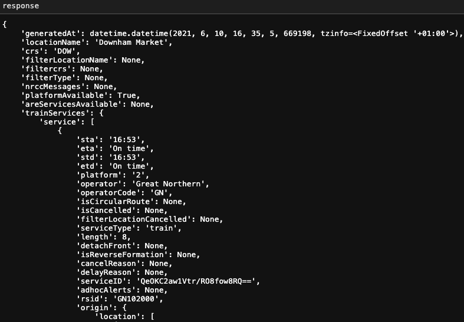
From the above we can say the response objects contains a field called nrccMessages.
This is retrieved and put into
the Dash card and displays any primary messages.
API Status
The second feature of the dashboard is the API status card:
This is also trivial to build as we again use the response object itself.
If the API call returns an empty response,
the status of the API changes and will require further investigation. However if the response returns a populated
dictionary, then we assume that the API is running normally.
Note that we have configured that the Dash card so that in the event of API not returning any data, the card updates
itself in colour and text:
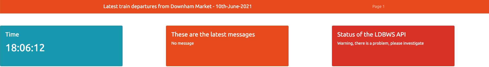
Latest departures
The third feature is the latest departure table which again makes use of the response object, retrieves all the
relevant information and places it in a dash table:
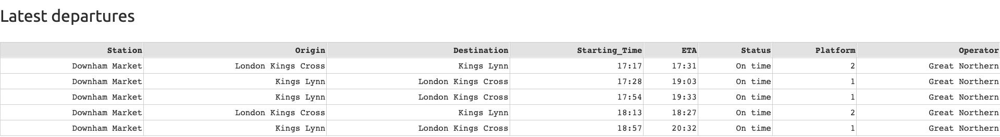
Calling table
The final feature, which is quite useful, shows at what stations the latest train from the departures table is calling
at. Alongside this, the estimate time of arrivals and statuses are also displayed, in case plans need to be changed or
adjusted:
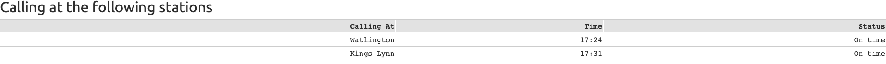
Note that all features update themselves automatically using Dash Core Components Interval component
(https://dash.plotly.com/dash-core-components/interval). This allows us to set the times of refreshing and the component
will fire a callback to a period we specify. Currently for this dashboard, all features (apart from the time) is
configured to refresh every half an hour.
This dashboard is not just configured to the station Downham Market, we can choose any station of our liking
(in the UK). All we need to do is click on the Change Station button at the end of the page:
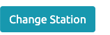
This will open a modal like so:
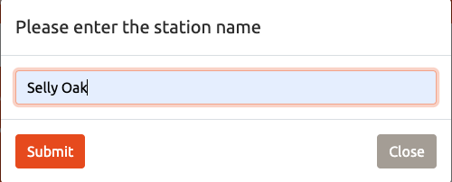
And once we will out the station name input and press the Submit button, the changes will take place automatically:
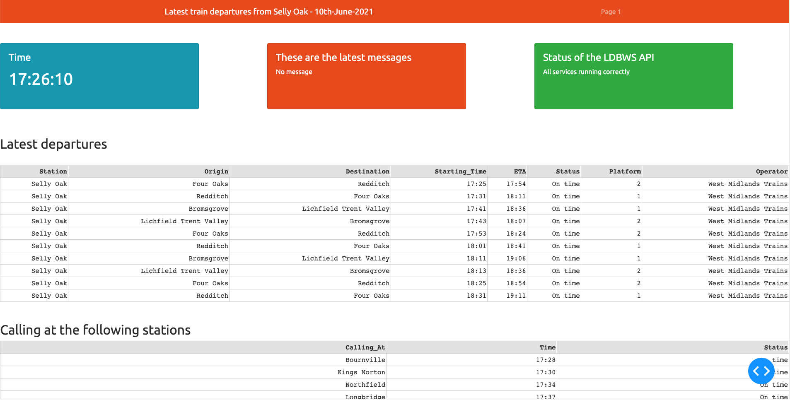